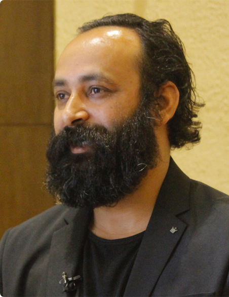

The Man Behind Sriyog.Com
The idea for Sriyog came in 2013 when our founder got multiple calls from friends and relatives asking to help them in recruiting a home tutor, plumber or for any other work. During this, an idea evolved in him that all we need is a contact number, so he started digitalizing the local contacts. On September 12, 2016, Sriyog.com was born. Since then, the journey of digitalizing the local contacts from eastern Nepal, Biratnagar was started with 24 work categories. Soon, it got popular and was loved by the local communities and we gradually expanded to major eastern cities like Itahari, Dharan, Dhankuta, Damak, Birtamod, etc.

Founder at Prakash Uprety
